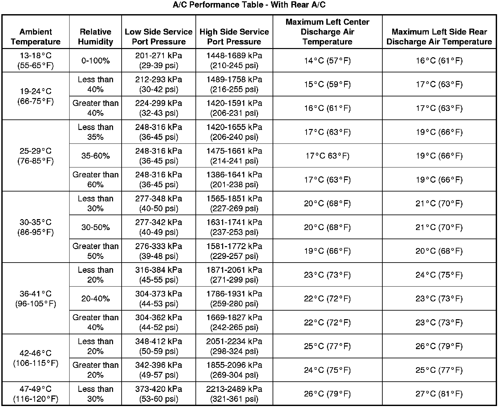
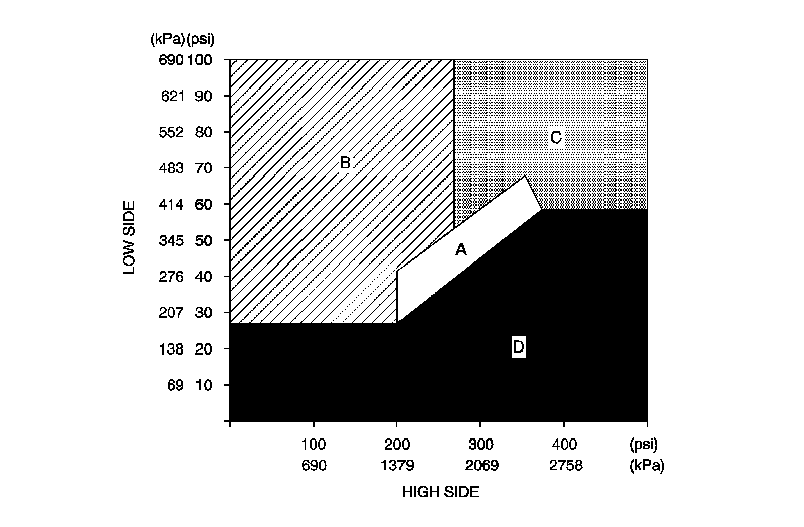

Air Conditioning (A/C) System Performance Test (Standard Cooling)
Air Conditioning (A/C) System Performance Test (LH2 - Standard Cooling)
Test Description
This test measures the operating efficiency of the A/C system under the following conditions:
* The current ambient air temperature
* The current relative humidity
* The high side pressure of the A/C system
* The low side pressure of the A/C system
* The temperature of the air being discharged into the passenger compartment
The numbers below refer to the step numbers on the diagnostic table.
1. This step determines if the A/C system has at least the minimum refrigerant charge required to operate the system without damage.
2. This step measures the performance of the A/C system.
3. This step is to allow for vehicle variations as well as high ambient temperatures.

A/C System Pressure - Zone Classification
